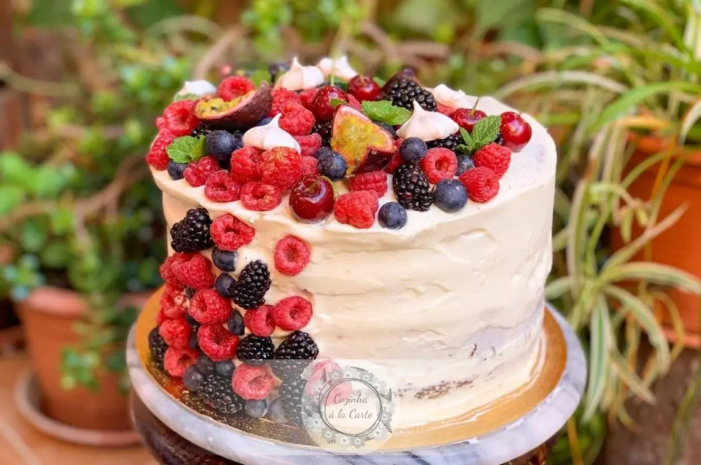

Receitas do Dudu
Bem-vindo ao meu Blog de Receitas! Aqui você vai encontrar diversas receitas deliciosas para fazer em
casa.
Recita de Bolo Red Velvet

Ingredientes
- 1 xícara e meia (chá) de Leite Líquido NINHO® Forti+ Integral
- 1 xícara e meia (chá) de açúcar de confeiteiro peneirado
- 1 colher (sopa) de suco de limão
- 1 xícara (chá) de manteiga sem sal em temperatura ambiente
- 1 xícara e meia (chá) de açúcar
- 3 ovos
- 1 colher (sopa) de essência de baunilha
- 1 xícara e meia (chá) de farinha de trigo
- 1 colher (sopa) de Chocolate em Pó 50% NESTLÉ® DOIS FRADES
- 1 colher e meia (sopa) de fermento em pó
- 1 colher (chá) de corante líquido vermelho
- Recheio e Cobertura
- 2 xícaras (chá) de cream cheese (450 g)
- meia xícara (chá) de manteiga sem sal em temperatura ambiente
- 1 colher (sopa) de essência de baunilha
Comentários